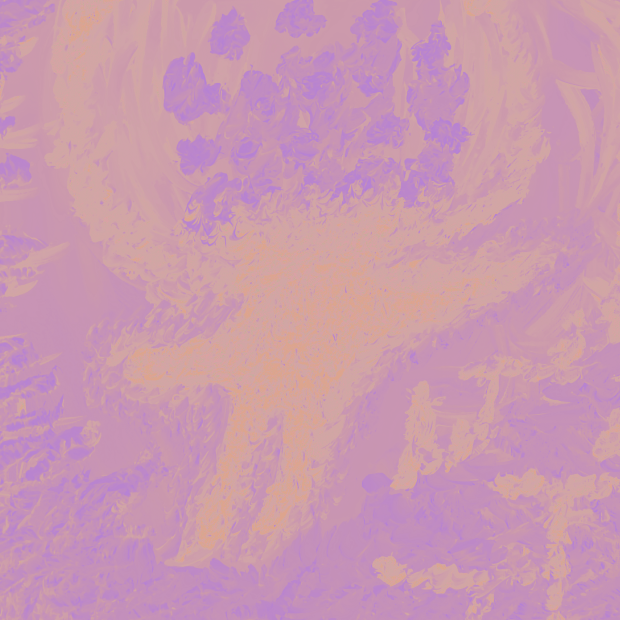
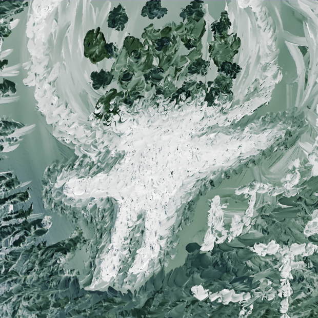
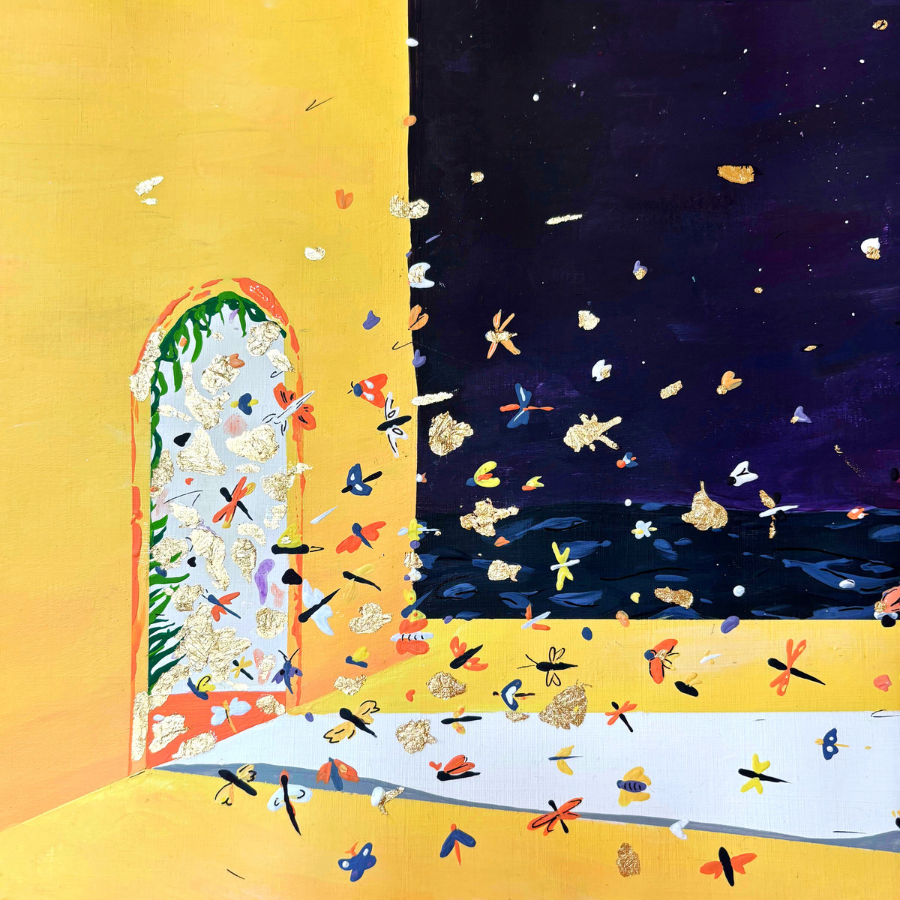
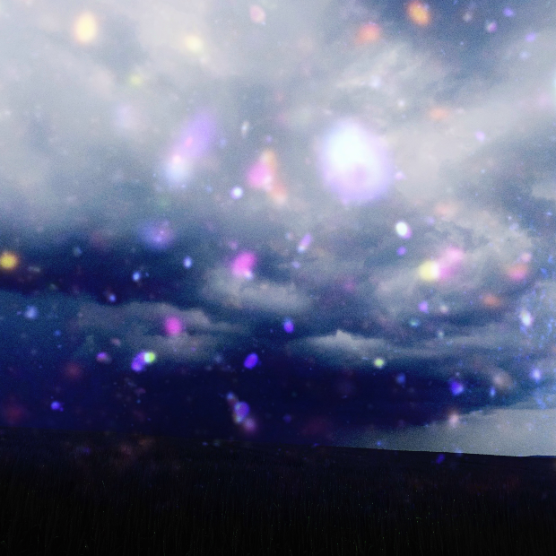
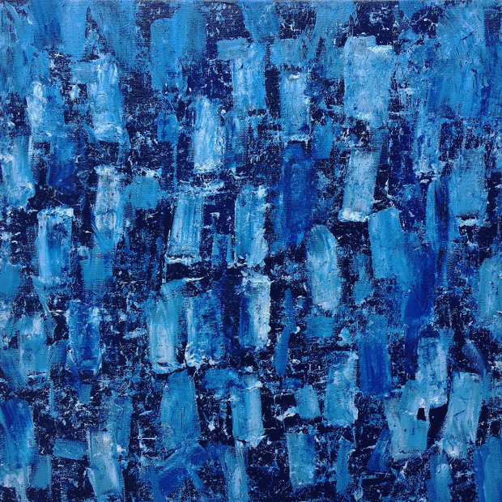

flirren / post-hardcore, 2026 - [gtr]
lavandine / dream pop, 2022 - 2026 [gtr|prod]
hamilton gerlach / ambient, 2015 - 2025
lorraine / post-punk, 2013 - 2016 [dr]
sail this ship alone / screamo, 2012 - 2013 [dr]
bandcamp / instagram / spotify / dream journal
audio & MIDI projects / death coil VST / pickup winding
theoretical physics
S T U D I O W O R K
orange gone - their body lay bent above the valley (2025)
(drums / percussion)
E N G I N E E R I N G W O R K
compete - 2025/2026, recording engineer
compete & bajo control split [PIT#06 / LD#03]
compete - promo 2026 [SSTW Records]
compete - win & lose [SSTW Records]
va fa napoli - 2025, recording engineer
obsolete - 2024, recording engineer
c o n v i n c e m e t o f i n i s h m y m a s t e r s t h e s i s i n t h e o r e t i c a l p h y s i c s
o r t o j o i n f o r c e s f o r s o m e m u s i c a l e n d e a v o u r
H A M I L T O N G E R L A C H - A B R I E F M O M E N T O F W A S T E ( 2 0 2 5 )

H A M I L T O N G E R L A C H F T . O R A N G E G O N E - M A N G L E D S P I R I T, R U N N I N G U P A G A I N S T A W A L L ( 2 0 2 5 )

L A V A N D I N E - W E A T H E R ( 2 0 2 4 )

- guitar / production / engineering
listen on spotify
L A V A N D I N E - S E L F T I T L E D ( 2 0 2 3 )

- guitar / glockenspiel
- production / engineering
- self-release 01/09/2023
- cassette release 13/12/2023 via Interstellar Pulse
listen on spotify
H A M I L T O N G E R L A C H - M O O N G L A D E S ( 2 0 2 0 )

listen on spotify
music video for "lonesome lake"
(photosensitivity warning, contains flashing images)
D I S C O G R A P H Y
lorraine - blind deconvolution live at janka studio (2016) - remix/remaster 2026
dreherhaus live session (2015)
-
lorraine - retrograde (2018)
lorraine - gimbal lock / p.r.y. (2016)
lorraine - frequency hopping (2015)
lorraine - 850 / differential mode (2014)
-
sail this ship alone - coma (2013)
sail this ship alone - amnesia (music video)
what if we kissed in the void
brief flirtations:
dreambot64 (2020/2021), a moment forever (nova rock sidestage 2013), it's the lipstick on your teeth (2014), radar maker (2009-2010), remember to breathe (demo 2010)
scott cirrus (2011-2013), spolu (2011), stadtkapelle mistelbach (2004-2008), the last minutes (pylon mixtape 2015)
Last updated: